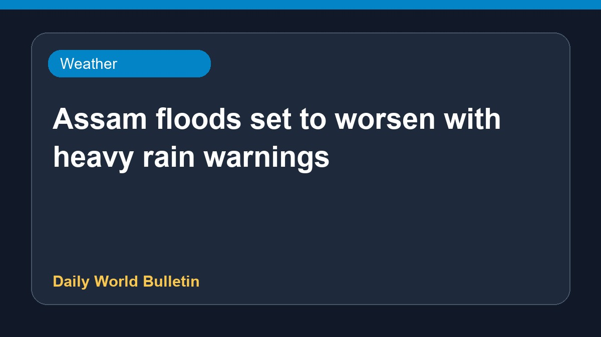

Assam floods set to worsen with heavy rain warnings

The flood situation in Assam is expected to deteriorate further following a fresh weather warning from the India Meteorological Department. Authorities have been alerted as heavy downpours are predicted to lash the region over the coming twenty-four hours. This upcoming spell of severe weather threatens to aggravate the existing challenges faced by residents in affected areas. Relief and rescue operations remain on high alert as water levels continue to rise. Further updates on the developing situation will be provided by local disaster management authorities as conditions evolve.
Original source: Weather News Sources
Assam floods likely to worsen as IMD warns of heavy rain for next 24 hours - India Today ↗
Assam floods likely to worsen as IMD warns of heavy rain for next 24 hours - India Today ↗